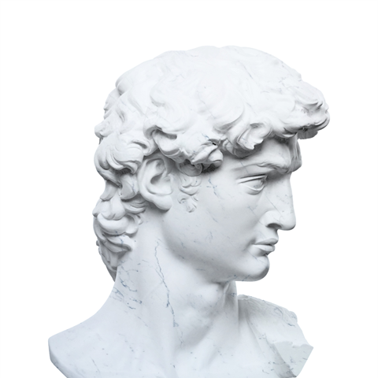

I’m Guanyu Qian, a Ph.D. student in
Electrical & Computer Engineering at
UCLA. My research focuses on the design
and control of point-of-load voltage regulator modules (VRMs) for
next-generation AI-datacenter deployments.
I hold degrees in
Applied Physics
and
Economics
from UC Davis.
Research areas:
Locked in and focused on research ⚡
Ph.D. Student
Electrical & Computer Engineering
UCLA
“In the spring of 2022, a three-month, research-like experience in PHY 122B with Prof. J. Anthony Tyson during my undergraduate studies taught me a lesson that shaped my research attitude and gave me lasting motivation to pursue it. This note of gratitude will remain a permanent part of this website; today, I strive to pass that motivation forward.”
Guanyu Qian is originally from Beijing, China. He received his Bachelor's degree in Applied Physics and Economics from the University of California, Davis, in 2022. During his undergraduate studies, he conducted research and experiments in particle physics, including background radiation detection and muon lifetime measurement.
Currently, he is a Ph.D. student working with Prof. Xiaofan Cui on the design and control of point-of-load voltage regulator modules (VRMs) for next-generation AI datacenters.
Applying reinforcement learning to point-of-load (PoL) converter control — learning a hybrid large-signal / small-signal policy that delivers fast transient response while staying provably stable across the full operating range.
Design and modeling of multiphase trans-inductor voltage regulator (TLVR) and uncoupled PoL topologies for high-current, fast-transient power delivery — analyzing transient performance, current sharing, and small-signal behavior.
A high-power, interleaved multiphase boost converter for electric-vehicle traction battery systems — pushing power density and efficiency with wide-bandgap (GaN/SiC) devices and robust multiphase control.
“We power AI and scale computing.”
Undergraduate · RL for DC–DC converter
Undergraduate · TLVR & multiphase boost
Master's · TLVR & multiphase boost
Undergraduate · TLVR & multiphase boost

Master's · Project topic
Master's · Project topic
Undergraduate · Project topic
Master's · Project topic
Undergraduate · Project topic
Part-time volunteer who drops in to help and hand out solutions. His method is unconventional: he sketches doodles and crafts totems to summon spirits for each circuit, then dances through the rituals, praying they'll converge. Improbably — they do. Now an analog designer at OmniVision.
Previously worked with me on CMCD wireless power transfer.
- Last seen: somewhere out in the rain.
Former student · Now at Institution
Former student · Now at Institution
A collaborator from UCLA CHIPS (Prof. Subramanian S. Iyer's group). Together we explored the integration of 48 V-to-1 V vertical power delivery for point-of-load conversion — the topic of Ben's master's thesis, recognized with an Outstanding Thesis Award. He is now with IBM.
Feel free to reach out about research, collaborations, or anything power-electronics related.